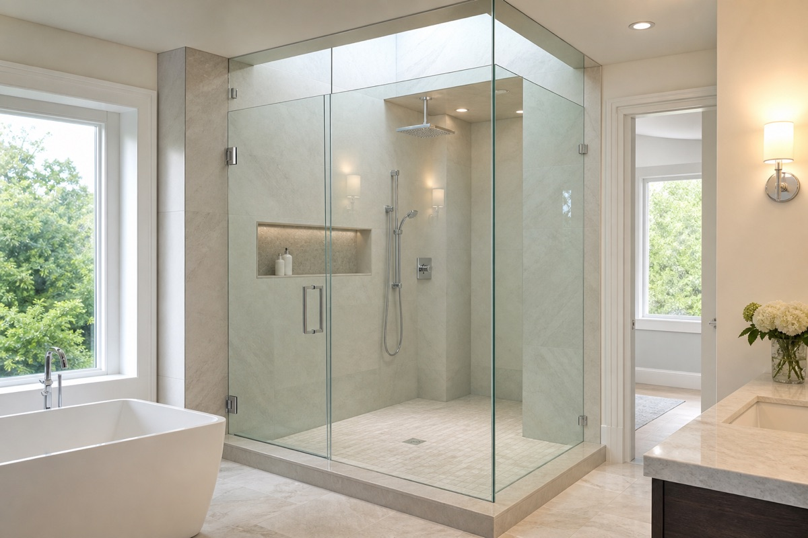

GlassStudio · Banjara Hills, Hyderabad
Designer Glass & Mirrors in Banjara Hills
Bespoke frameless shower cubicles, 12mm toughened balcony railings, fluted designer glass partitions, and luxury openable glass wardrobes for villas and penthouses.
Luxury Architectural Glazing for Banjara Hills Homes & Offices
Banjara Hills and Jubilee Hills represent the pinnacle of luxury living and designer architecture in Hyderabad. GlassStudio brings tailor-made craftsmanship, flawless corner mitering, and international architectural fittings directly to your doorstep.
From custom frameless walk-in shower cubicles featuring brass, rose gold, or matte black hardware, to heavy-duty 12mm toughened laminated balcony railings with concealed base profiles, we deliver master-class luxury with zero compromise on safety.
- Tailored for Luxury Villas & Duplexes
- Premium Brass & Matte Black Hardware
- High-Clarity Ultra-Clear Extra Clear Glass
- Stainless Steel 316 Marine Grade Spigots
Luxury Glass Solutions for Banjara Hills
- Frameless Shower Enclosures: Custom corner, sliding, and walk-in shower screens with water-deflector magnetic seals.
- Balcony & Staircase Glass Railings: Toughened and laminated glass balustrades with continuous aluminum base shoe or spigots.
- Fluted & Reeded Glass Partitions: Vintage textured fluted glass dividing living, dining, and pooja spaces with unmatched elegance.
- Openable & Sliding Glass Wardrobes: Anodized slim aluminum frame profiles with tinted, bronze, or reflective glass shutters.
- Large Architectural Mirrors: Beveled edge bathroom LED mirrors and gym mirrors installed with utmost precision.
Designer glass and mirrors for Banjara Hills interiors
Homes, boutiques, salons and restaurants in Banjara Hills are usually designed with a strong visual style, and glass and mirrors are a big part of it. We work with homeowners and interior designers to supply and install designer glass and custom mirrors that match the look of the space.
- Fluted and reeded glass for partitions, cabinet shutters and doors
- Tinted glass in grey and bronze for wardrobes and partitions
- Lacquered and back-painted glass for feature walls and kitchen splashbacks
- Custom mirrors in round, arch and custom shapes with bevelled or framed edges
- LED mirrors for bathrooms, dressing rooms and salons
- Antique and tinted mirrors for restaurants and boutiques
Locations We Cater To in Banjara Hills
We provide concierge on-site consultations across: Banjara Hills (Road No. 1 through 14), Jubilee Hills (Road 36 & 45), Film Nagar, Somajiguda, Panjagutta, KBR Park enclave, and Srinagar Colony.
Schedule a Private Consultation in Banjara Hills
Our design specialists visit your residence with physical glass samples, hardware finishes, and custom catalog options.